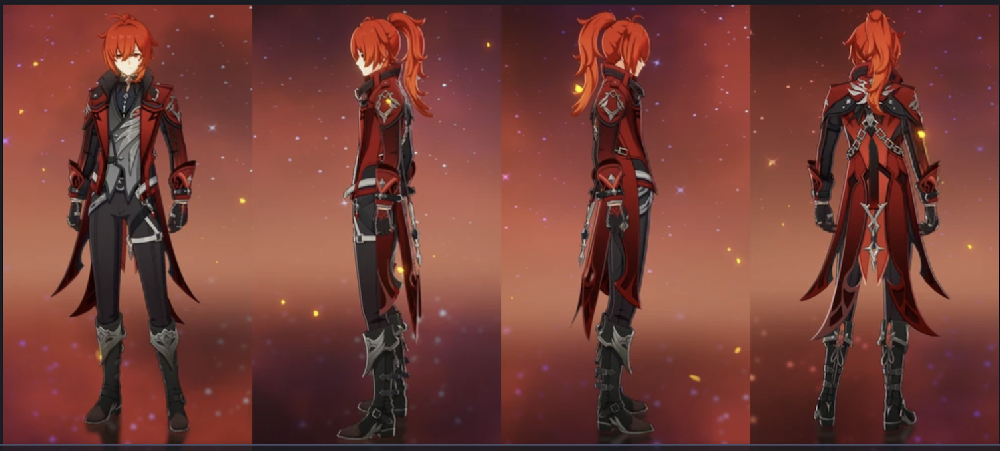
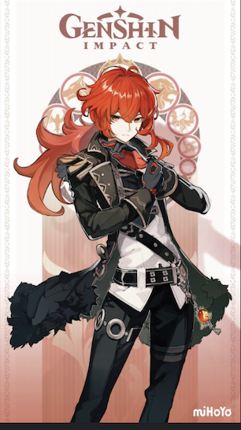
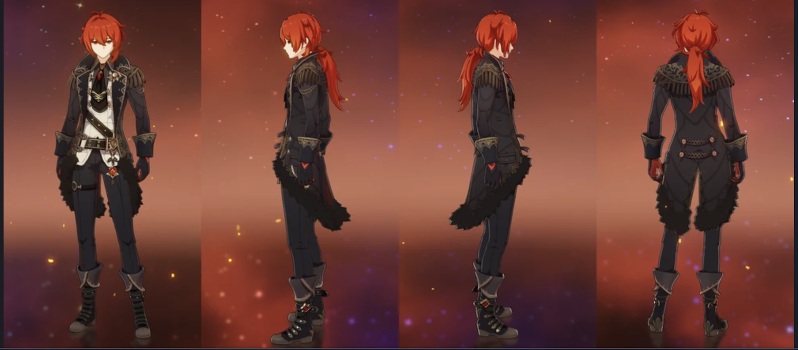

Diluc Ragnvindr est commercent renommé. Diluc, le propriétaire du Domaine de l'Aurore et de nombreux bars. Il a un sens de moralité très fort et est un homme de principes. Avant il était un chevalier et est un professionnel des art martiaux. En raison de cela, il méprise l'Ordo Favonius, c'est-à-dire les chevaliers. Malgrè cela, il continu d'occomplir des exploits et d'aider aux habitants de Mondschtadt, en cachant sans identité. Il a pour objectif de trouver la source de la magie maléfique qu'a tué son père et de se venger de lui.
« Étant l'homme le plus riche de Mondstadt, Diluc se présente toujours comme un jeune homme élégant et charmant, à l'image publique parfaite. Sous ce masque se cache un guerrier à la volonté de fer, forgée dans les flammes qui ne recule devant rien pour protéger Mondstadt. Ne comptez pas sur lui pour ménager ses adversaires, il sera sans pitié jusqu'à la fin. »
Diluc est a la vision pyro (du feux) et manie une épée à deux mains. Il est un personnage de 5 étoiles et très rare. Il est née le 30 avril
Voici ses deux skins possibles, suite du quotidien et son costume de super héros!
